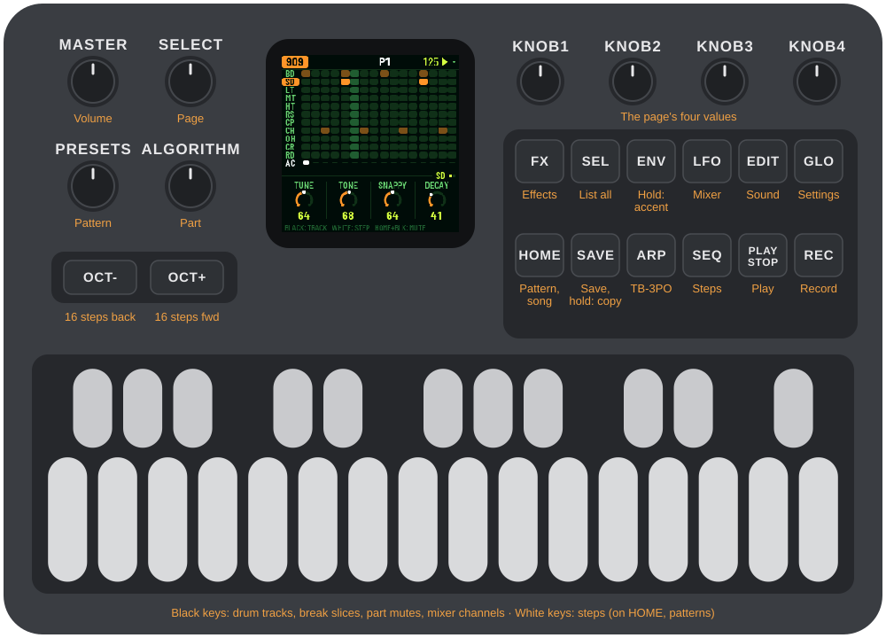

Acid, techno, and big-beat groovebox firmware for the M-VAVE FM-1. An authentic TR-909 drum machine, a modelled Roland SH-101 monophonic synthesizer, dual TB-303 basslines with TB-3PO algorithmic generator, and a real-time sliced breakbeat player, wrapped in the signature VIRUS toxic green interface.

ReplicantFM1 installs and uninstalls safely over USB-MIDI. The installer can restore M-VAVE stock firmware at any time.
To return to stock firmware, use the installer's "Back to the stock firmware" option or M-VAVE's official M-UPGRADE utility from
m-vave.com/download. M-VAVE and FM-1 are trademarks of their respective owners.